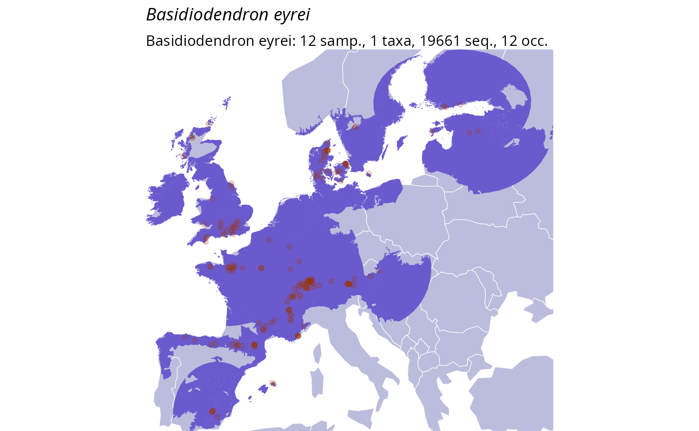

library(taxinfo)
#> Loading required package: MiscMetabar
#> Loading required package: phyloseq
#> Loading required package: ggplot2
#> Loading required package: dada2
#> Loading required package: Rcpp
#> Loading required package: dplyr
#>
#> Attaching package: 'dplyr'
#> The following objects are masked from 'package:stats':
#>
#> filter, lag
#> The following objects are masked from 'package:base':
#>
#> intersect, setdiff, setequal, union
#> Loading required package: purrr
library(MiscMetabar)
library(ggplot2)
library(dplyr)Overview
The Global Biodiversity Information Facility (GBIF) is the world’s largest repository of biodiversity occurrence data. The taxinfo package provides seamless integration with GBIF through specialized functions that retrieve occurrence data, create distribution maps, and analyze biogeographic patterns for taxa in your phyloseq objects.
Core GBIF Functions
-
tax_gbif_occur_pq(): Retrieve occurrence counts from GBIF -
plot_tax_gbif_pq(): Create distribution maps -
range_bioreg_pq(): Analyze biogeographic ranges -
tax_check_ecoregion(): Validate occurrences against ecoregions -
tax_occur_check_pq(): Check occurrences within a geographic radius
Note: Functions like
tax_gbif_occur_pq() and tax_occur_check_pq()
can work with either phyloseq objects or vectors of taxonomic names
(taxnames parameter). When using a phyloseq object, results
are automatically added to the tax_table. When using
taxnames, a tibble is returned.
Basic Occurrence Data Retrieval
Get verified taxonomic names
# Load and prepare example data
data("data_fungi_mini", package = "MiscMetabar")
# Keep only first 20 taxa for speed
data_clean <- prune_taxa(taxa = taxa_names(data_fungi_mini)[1:20], data_fungi_mini) |>
gna_verifier_pq(data_sources = 210)
#> ✔ GNA verification summary:
#> • Total taxa in phyloseq: 20
#> • Taxa submitted for verification: 19
#> • Genus-level only taxa: 2
#> • Total matches found: 15
#> • Synonyms: 4 (including 4 at genus level)
#> • Accepted names: 11 (including 6 at genus level)Find GBIF occurrence counts and add to phyloseq object
data_clean_gbif <- tax_gbif_occur_pq(data_clean)
#> ℹ Processing GBIF occurrences for Stereum ostrea
#> ℹ Processing GBIF occurrences for Ossicaulis lachnopus
#> ■■■■■■■■■■■ 33% | ETA: 2s
#> ℹ Processing GBIF occurrences for Stereum hirsutum
#> ■■■■■■■■■■■ 33% | ETA: 2sℹ Processing GBIF occurrences for Basidiodendron eyrei
#> ■■■■■■■■■■■ 33% | ETA: 2sℹ Processing GBIF occurrences for Sistotrema oblongisporum
#> ■■■■■■■■■■■ 33% | ETA: 2sℹ Processing GBIF occurrences for Fomes fomentarius
#> ■■■■■■■■■■■ 33% | ETA: 2s■■■■■■■■■■■■■■■■■■■■■■■■ 78% | ETA: 1s
#> ℹ Processing GBIF occurrences for Cerocorticium molare
#> ■■■■■■■■■■■■■■■■■■■■■■■■ 78% | ETA: 1sℹ Processing GBIF occurrences for Aporpium canescens
#> ■■■■■■■■■■■■■■■■■■■■■■■■ 78% | ETA: 1s■■■■■■■■■■■■■■■■■■■■■■■■■■■■■■■ 100% | ETA: 0s
#> ℹ Processing GBIF occurrences for Hypochnicium analogumExample Visualization
Here’s an example of what GBIF occurrence data visualization can look like:

GBIF occurrence counts by taxon
Occurrence Counts by Country
Analyze geographic distribution patterns:
data_clean_gbif_country <- tax_gbif_occur_pq(data_clean, by_country = TRUE)
#> ℹ Processing GBIF occurrences for Stereum ostrea
#> ℹ Processing GBIF occurrences for Ossicaulis lachnopus
#> ■■■■■■■■■■■ 33% | ETA: 2s
#> ℹ Processing GBIF occurrences for Stereum hirsutum
#> ■■■■■■■■■■■ 33% | ETA: 2sℹ Processing GBIF occurrences for Basidiodendron eyrei
#> ■■■■■■■■■■■ 33% | ETA: 2sℹ Processing GBIF occurrences for Sistotrema oblongisporum
#> ■■■■■■■■■■■ 33% | ETA: 2sℹ Processing GBIF occurrences for Fomes fomentarius
#> ■■■■■■■■■■■ 33% | ETA: 2sℹ Processing GBIF occurrences for Cerocorticium molare
#> ■■■■■■■■■■■ 33% | ETA: 2sℹ Processing GBIF occurrences for Aporpium canescens
#> ■■■■■■■■■■■ 33% | ETA: 2s■■■■■■■■■■■■■■■■■■■■■■■■■■■■■■■ 100% | ETA: 0s
#> ℹ Processing GBIF occurrences for Hypochnicium analogum
data_clean_gbif_country@tax_table |>
as.data.frame() |>
select(currentCanonicalSimple, US, FR, DE, GB, ES, MX) |>
tidyr::pivot_longer(
cols = c(US, FR, DE, GB, ES, MX),
names_to = "country",
values_to = "occurrences"
) |>
mutate(occurrences = as.numeric(occurrences)) |>
filter(!is.na(occurrences), occurrences > 0) |>
ggplot(aes(x = country, y = occurrences, fill = country)) +
geom_violin() +
geom_jitter(width = 0.2, alpha = 0.5, height = 0) +
scale_y_log10() +
stat_summary(
fun.data = function(x) {
return(data.frame(y = max(x) + 0.1, label = paste("n =", length(x))))
},
geom = "text",
vjust = 0
) +
labs(
title = "GBIF Occurrences by Country",
x = "Country",
y = "Number of occurrences (log scale)"
) +
theme_idest() +
theme(legend.position = "none")
Temporal Patterns
Examine occurrence trends over time. Here we don’t use
add_to_phyloseq since the data frame output is
sufficient.
gbif_years <- tax_gbif_occur_pq(data_clean,
by_years = TRUE,
add_to_phyloseq = FALSE
) |>
tidyr::pivot_longer(cols = -canonicalName, names_to = "year", values_to = "count") |>
mutate(year = as.numeric(year))
#> ℹ Processing GBIF occurrences for Stereum ostrea
#> ℹ Processing GBIF occurrences for Ossicaulis lachnopus
#> ℹ Processing GBIF occurrences for Stereum hirsutum
#> ■■■■■■■■■■■■■■ 44% | ETA: 2s
#> ℹ Processing GBIF occurrences for Basidiodendron eyrei
#> ■■■■■■■■■■■■■■ 44% | ETA: 2sℹ Processing GBIF occurrences for Sistotrema oblongisporum
#> ■■■■■■■■■■■■■■ 44% | ETA: 2sℹ Processing GBIF occurrences for Fomes fomentarius
#> ■■■■■■■■■■■■■■ 44% | ETA: 2sℹ Processing GBIF occurrences for Cerocorticium molare
#> ■■■■■■■■■■■■■■ 44% | ETA: 2sℹ Processing GBIF occurrences for Aporpium canescens
#> ■■■■■■■■■■■■■■ 44% | ETA: 2s■■■■■■■■■■■■■■■■■■■■■■■■■■■■■■■ 100% | ETA: 0s
#> ℹ Processing GBIF occurrences for Hypochnicium analogum
# Visualize temporal trends for the occurences of taxa
gbif_years |>
ggplot(aes(x = year, y = log10(count + 1), color = canonicalName)) +
geom_line() +
geom_line(data = filter(gbif_years, !is.na(count)), linetype = "dotted") +
geom_point() +
labs(
title = "GBIF Occurrences Over Time",
x = "Year",
y = "Number of GBIF occurrences"
) +
theme_idest() +
ggrepel::geom_text_repel(
data = summarise(group_by(arrange(filter(gbif_years, !is.na(count)), desc(year)), canonicalName), count = first(count), year = first(year)),
aes(label = canonicalName, x = as.numeric(year)), hjust = 0,
direction = "y", size = 3
) +
xlim(2010, 2026) +
theme(legend.position = "none")
#> Warning: Removed 235 rows containing missing values or values outside the scale range
#> (`geom_line()`).
#> Warning: Removed 26 rows containing missing values or values outside the scale range
#> (`geom_line()`).
#> Warning: Removed 260 rows containing missing values or values outside the scale range
#> (`geom_point()`).
gbif_years_cumsum <- gbif_years |>
mutate(year = as.numeric(year)) |>
arrange(year) |>
group_by(canonicalName) |>
mutate(year = as.numeric(year)) |>
mutate(cum_count = cumsum(tidyr::replace_na(count, 0)))
ggplot(gbif_years_cumsum, aes(
x = year, y = log10(cum_count + 1),
color = canonicalName
)) +
geom_line() +
geom_point() +
labs(
title = "GBIF Cumulative Occurrences Over Time",
x = "Year",
y = "Number of GBIF occurrences"
) +
theme_idest() +
ggrepel::geom_text_repel(
data = summarise(
group_by(
arrange(gbif_years_cumsum, desc(year)),
canonicalName
),
cum_count = first(cum_count),
year = first(year)
),
aes(
label = canonicalName,
x = as.numeric(year)
),
hjust = 0, direction = "y", size = 3
) +
xlim(2008, 2026) +
theme(legend.position = "none")
#> Warning: Removed 162 rows containing missing values or values outside the scale range
#> (`geom_line()`).
#> Warning: Removed 162 rows containing missing values or values outside the scale range
#> (`geom_point()`).
Visualization and Mapping
Basic Distribution Plots
Create occurrence distribution visualizations:
# Plot global vs regional occurrences
psmelt(data_clean_gbif) |>
as.data.frame() |>
group_by(currentCanonicalSimple) |>
summarise(
Global_occurences = as.numeric(unique(Global_occurences)),
nb_seq = sum(Abundance),
nb_samp = sum(Abundance > 0)
) |>
filter(!is.na(Global_occurences)) |>
ggplot(aes(
x = log10(1 + nb_seq),
y = log10(1 + Global_occurences)
)) +
geom_point(alpha = 0.7) +
ggrepel::geom_text_repel(aes(label = currentCanonicalSimple),
vjust = -0.5,
size = 3,
fontface = "italic",
min.segment.length = 0.2,
force = 4
) +
coord_flip() +
labs(
title = "GBIF Occurrence Counts vs molecular abundance",
x = "Number of sequences (log scale)",
y = "Number of GBIF occurrences (log scale)"
) +
theme_idest()
Interactive Distribution Maps
Create interactive maps showing species distributions:
plot_tax_gbif_pq(select_taxa_pq(data_clean, taxnames = "Ossicaulis lachnopus"),
interactive_plot = TRUE
)
#> Warning in verify_pq(physeq, verbose = verbose): At least one of your sample
#> contains less than 500 sequences.
#> Warning in verify_pq(physeq, verbose = verbose): At least one of your taxa is
#> represent by less than 1 sequences.
#> Warning in verify_pq(physeq, verbose = verbose): At least one of your samples
#> metadata columns contains NA.
#> Number of non-matching ASV 0
#> Number of matching ASV 20
#> Number of filtered-out ASV 18
#> Number of kept ASV 2
#> Number of kept samples 137
#> ℹ Start the computation of Ossicaulis lachnopus
#> >>>>>>>> Total number of records: 191
#> ...GBIF records of Ossicaulis lachnopus : download of all records starting...
#> ----------------- 100 %...
#> ---> Grain filtering...
#> Records removed: 2
#> ---> Removal of duplicated records...
#> Records removed: 71
#> ---> Removal of absence records...
#> Records removed: 0
#> ---> Basis of records selection...
#> Records removed: 45
#> ---> Establishment of records selection...
#> Records removed: 0
#> ---> Time period selection...
#> Records removed: 0
#> ---> Removal of identical xy records...
#> Records removed: 0
#> ---> Removal of raster centroids...
#> Records removed: 0
#> [[1]]Static Distribution Maps
distribution_maps <- plot_tax_gbif_pq(
taxnames = c("Ossicaulis lachnopus", "Basidiodendron eyrei"),
n_occur = 1000
)
#> ℹ Start the computation of Ossicaulis lachnopus
#> >>>>>>>> Total number of records: 191
#> ...GBIF records of Ossicaulis lachnopus : download of all records starting...
#> ----------------- 100 %...
#> ---> Grain filtering...
#> Records removed: 2
#> ---> Removal of duplicated records...
#> Records removed: 71
#> ---> Removal of absence records...
#> Records removed: 0
#> ---> Basis of records selection...
#> Records removed: 45
#> ---> Establishment of records selection...
#> Records removed: 0
#> ---> Time period selection...
#> Records removed: 0
#> ---> Removal of identical xy records...
#> Records removed: 0
#> ---> Removal of raster centroids...
#> Records removed: 0
#> ℹ Start the computation of Basidiodendron eyrei
#> >>>>>>>> Total number of records: 815
#> ...GBIF records of Basidiodendron eyrei : download of all records starting...
#> ----------------- 100 %...
#> ---> Grain filtering...
#> Records removed: 3
#> ---> Removal of duplicated records...
#> Records removed: 288
#> ---> Removal of absence records...
#> Records removed: 0
#> ---> Basis of records selection...
#> Records removed: 302
#> ---> Establishment of records selection...
#> Records removed: 0
#> ---> Time period selection...
#> Records removed: 0
#> ---> Removal of identical xy records...
#> Records removed: 0
#> ---> Removal of raster centroids...
#> Records removed: 0
distribution_maps[[1]]
distribution_maps[[2]]
Biogeographic Analysis
Range Analysis
data_clean_range <- range_bioreg_pq(
select_taxa_pq(data_clean,
taxnames = c("Ossicaulis lachnopus", "Basidiodendron eyrei")
),
make_plot = TRUE
)
#> Warning in verify_pq(physeq, verbose = verbose): At least one of your sample
#> contains less than 500 sequences.
#> Warning in verify_pq(physeq, verbose = verbose): At least one of your taxa is
#> represent by less than 1 sequences.
#> Warning in verify_pq(physeq, verbose = verbose): At least one of your samples
#> metadata columns contains NA.
#> Number of non-matching ASV 0
#> Number of matching ASV 20
#> Number of filtered-out ASV 17
#> Number of kept ASV 3
#> Number of kept samples 137
#> ℹ Finding GBIF occurrence for Ossicaulis lachnopus
#> >>>>>>>> Total number of records: 191
#> ...GBIF records of Ossicaulis lachnopus : download of sample of records starting...
#> ----------------- 100 %...
#> ---> Grain filtering...
#> Records removed: 2
#> ---> Removal of duplicated records...
#> Records removed: 71
#> ---> Removal of absence records...
#> Records removed: 0
#> ---> Basis of records selection...
#> Records removed: 45
#> ---> Establishment of records selection...
#> Records removed: 0
#> ---> Time period selection...
#> Records removed: 0
#> ---> Removal of identical xy records...
#> Records removed: 0
#> ---> Removal of raster centroids...
#> Records removed: 0
#> ℹ Starting range computation for Ossicaulis lachnopus
#> ℹ Finding GBIF occurrence for Basidiodendron eyrei
#> >>>>>>>> Total number of records: 815
#> ...GBIF records of Basidiodendron eyrei : download of sample of records starting...
#> ----------------- 100 %...
#> ---> Grain filtering...
#> Records removed: 3
#> ---> Removal of duplicated records...
#> Records removed: 288
#> ---> Removal of absence records...
#> Records removed: 0
#> ---> Basis of records selection...
#> Records removed: 302
#> ---> Establishment of records selection...
#> Records removed: 0
#> ---> Time period selection...
#> Records removed: 0
#> ---> Removal of identical xy records...
#> Records removed: 0
#> ---> Removal of raster centroids...
#> Records removed: 0
#> ℹ Starting range computation for Basidiodendron eyrei
data_clean_range[[2]]
Ecoregion Validation
Check if occurrences match expected ecoregions:
tax_check_ecoregion("Xylobolus subpileatus",
longitudes = c(2.3522, 4.2),
latitudes = c(48.8566, 33)
)
#> ℹ Downloading ecoregion data for Xylobolus subpileatus
#> ℹ Downloading and validating ecoregion data
#> ℹ Listing ecoregions for Xylobolus subpileatus
#> Warning: attribute variables are assumed to be spatially constant throughout
#> all geometries
#> ℹ Listing ecoregions for 2 GPS points
#> Warning: attribute variables are assumed to be spatially constant throughout
#> all geometries
#> $ecoregion
#>
#> Lower New England / Northern Piedmont
#> 91
#> North Atlantic Coast
#> 45
#> Piedmont
#> 33
#> Pannonian Mixed Forests
#> 27
#> Florida Peninsula
#> 25
#> East Gulf Coastal Plain
#> 24
#> Upper East Gulf Coastal Plain
#> 22
#> Gulf Coast Prairies And Marshes
#> 18
#> Upper West Gulf Coastal Plain
#> 18
#> Cumberlands And Southern Ridge And Valley
#> 16
#> North Central Tillplain
#> 14
#> Southern Blue Ridge
#> 14
#> Great Lakes
#> 11
#> Mississippi River Alluvial Plain
#> 11
#> Ozarks
#> 11
#> South Atlantic Coastal Plain
#> 10
#> Mid-Atlantic Coastal Plain
#> 9
#> West Gulf Coastal Plain
#> 9
#> Crosstimbers And Southern Tallgrass Prairie
#> 7
#> Western Allegheny Plateau
#> 6
#> Chesapeake Bay Lowlands
#> 5
#> Interior Low Plateau
#> 5
#> Osage Plains/Flint Hills Prairie
#> 5
#> Trans-Mexican Volcanic Belt Pine-Oak Forests
#> 5
#> Central Appalachian Forest
#> 4
#> Italian Sclerophyllous And Semi-Deciduous Forests
#> 4
#> Oaxacan Montane Forests
#> 4
#> Ouachita Mountains
#> 4
#> Sierra Madre De Chiapas Moist Forests
#> 4
#> Talamancan Montane Forests
#> 4
#> Central Tallgrass Prairie
#> 3
#> Sierra Madre Oriental Pine-Oak Forests
#> 3
#> Costa Rican Seasonal Moist Forests
#> 2
#> Magdalena Valley Montane Forests
#> 2
#> Northern Appalachian / Acadian
#> 2
#> Taiheiyo Evergreen Forests
#> 2
#> Alps Conifer And Mixed Forests
#> 1
#> Balsas Dry Forests
#> 1
#> Boreal Shield
#> 1
#> Cantabrian Mixed Forests
#> 1
#> Cauca Valley Montane Forests
#> 1
#> Central Mexican Matorral
#> 1
#> English Lowlands Beech Forests
#> 1
#> High Allegheny Plateau
#> 1
#> Iberian Sclerophyllous And Semi-Deciduous Forests
#> 1
#> Jalisco Dry Forests
#> 1
#> Pindus Mountains Mixed Forests
#> 1
#> Prairie-Forest Border
#> 1
#> Sierra Madre Del Sur Pine-Oak Forests
#> 1
#> Southwest Iberian Mediterranean Sclerophyllous And Mixed Forests
#> 1
#> Superior Mixed Forest
#> 1
#>
#> $points_ecoregion
#> ECO_ID_U ECO_CODE ECO_NAME ECO_NUM
#> 1 10510 PA0402 Atlantic Mixed Forests 2
#> 2 10691 PA1321 North Saharan Steppe And Woodlands 21
#> ECODE_NAME CLS_CODE ECO_NOTES WWF_REALM
#> 1 PA0402. Atlantic mixed forests 0 <NA> PA
#> 2 PA1321. North Saharan steppe and woodlands 0 <NA> PA
#> WWF_REALM2 WWF_MHTNUM WWF_MHTNAM RealmMHT
#> 1 Palearctic 4 Temperate Broadleaf and Mixed Forests PA4
#> 2 Palearctic 13 Deserts and Xeric Shrublands PA13
#> ER_UPDATE ER_DATE_U ER_RATION SOURCEDATA
#> 1 <NA> <NA> <NA> Olson, 2001
#> 2 <NA> <NA> <NA> Olson, 2001
#>
#> $is_in_ecoregion
#> [1] FALSE